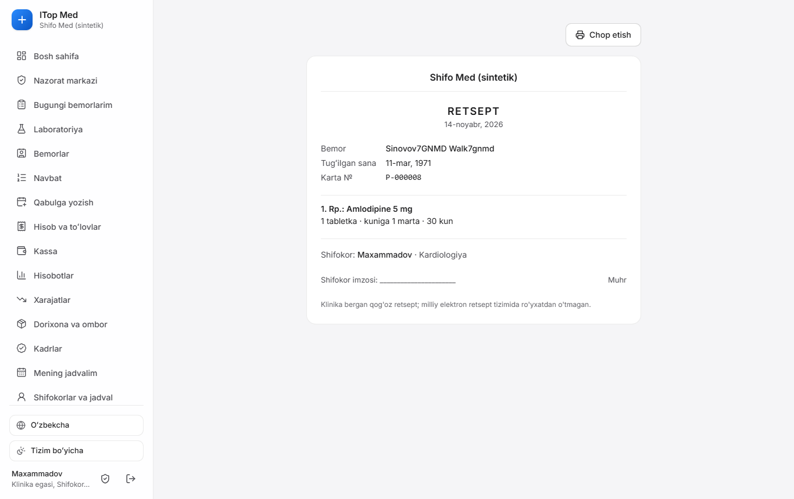
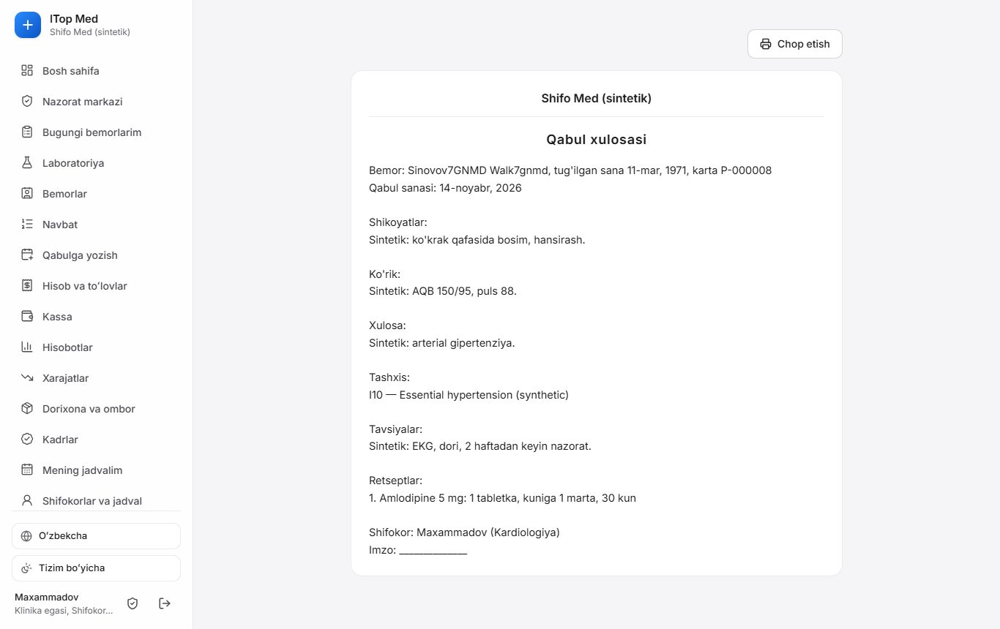
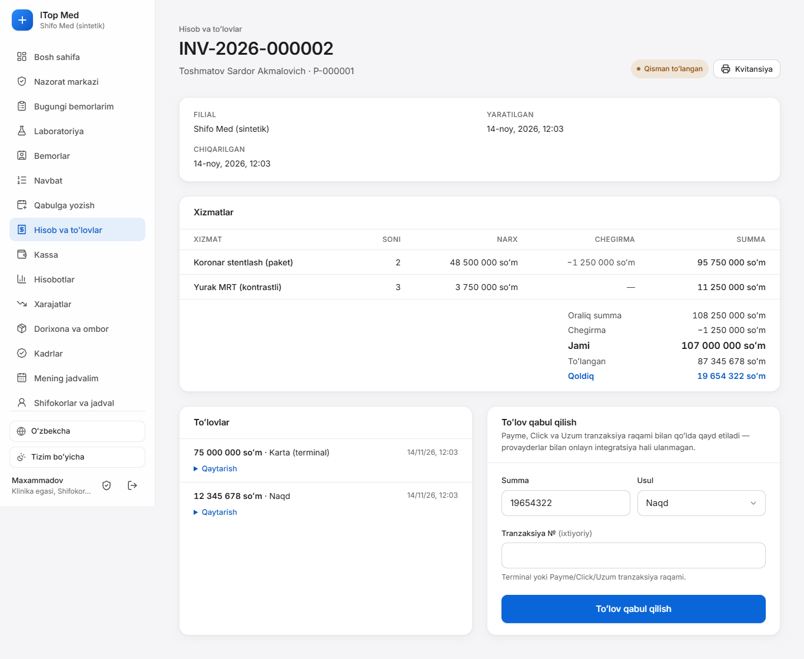
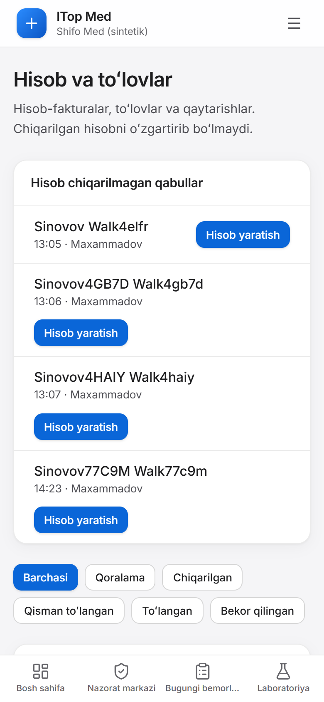

Tizimda nima bor, uni qanday o'rnatish, ishga tushirish, boshqarish, kundalik ishlatish, o'zingizga kerakli narsalarni yaratish va xavfsiz saqlash.
Qisqa yo'l: ish stolidagi "ITop Med" yorlig'ini ikki marta bosing → kiring → chap menyudagi "Nazorat markazi". Qolgani — shu qo'llanmada.
Versiya: 2026-yil noyabr · Skrinshotlar sintetik ma'lumotlar bilan · Texnik tafsilotlar: docs/ARCHITECTURE.md, docs/SECURITY-AND-PRIVACY.md, docs/DEPLOYMENT.md
ITop Med — klinikalarni boshqarish tizimi. Bitta dastur hamma uchun: keraksiz bo'limlar ko'rinmaydi, kerak bo'lsa keyin yoqiladi.
| Kim | Misol | Tizim nimani yoqadi |
|---|---|---|
| Xususiy kabinet | 1 kardiolog, ehtimol 1 administrator | Bemorlar, qabul, tibbiy yozuv, retsept, to'lov, hisobot, bemor portali |
| Stomatologiya | Tish klinikasi | + tish formulasi, stomatologik xizmatlar, ombor |
| Diagnostika / laboratoriya | Tahlil markazi | + laboratoriya, ombor |
| Ko'p tarmoqli klinika | Ko'p shifokor, bir nechta filial | Hamma bo'limlar, kadrlar, filiallar |
Tillar: o'zbekcha (lotin), o'zbekcha (kirill), ruscha, inglizcha — har bir foydalanuvchi o'zi tanlaydi. Qurilmalar: kompyuter, planshet, telefon; ilova sifatida o'rnatiladi.
/admin
Klinikalarni yaratasiz, tariflar va bo'limlarni boshqarasiz, o'z jamoangiz, audit. Bemorlarning tibbiy ma'lumotini ko'ra olmaysiz — baza darajasida bloklangan.
/c/<klinika>
Klinika egasi va xodimlari ishlaydigan joy. Har bir klinika boshqasidan to'liq ajratilgan.
/p/<klinika>
Bemor qabullarini, natijalarini, hisoblarini ko'radi va o'zi yoziladi.
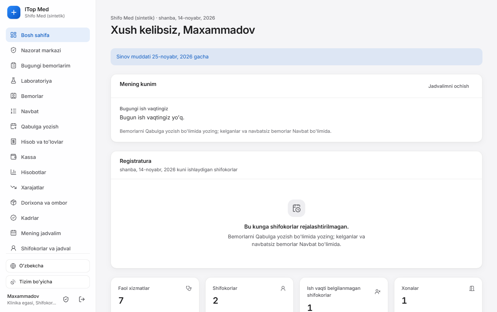
| Bo'lim | Nima qiladi |
|---|---|
| Bemorlar | Ro'yxatga olish (karta raqami, JShShIR/pasport), xatolarga chidamli qidiruv, dublikatlardan himoya, roziliklar |
| Qabulga yozish, Navbat | Shifokor jadvali bo'yicha bo'sh vaqtlar; bir vaqtga ikki bemor yozilmaydi; "Keldi", navbat raqami, navbatsiz kelganlar, ko'chirish |
| Tibbiy yozuvlar | Shikoyat, anamnez, ko'rik, xulosa, reja; MKB-10 tashxis; allergiya; hayotiy ko'rsatkichlar. Imzolangach o'zgartirilmaydi, faqat qo'shimcha |
| Retseptlar | Dori, doza, tartib, muddat; allergiya ogohlantirishi; A5 chop etish |
| Shablonlar | O'zingiz yaratadigan hujjatlar va yozuv shablonlari (11-bo'lim) |
| Laboratoriya, Hamshira posti | Buyurtma, namuna, natija, norma belgilari, ikki kishilik tasdiq; qon bosimi, puls, harorat |
| Hisob, Kassa, Xarajatlar | Hisob-faktura, chegirma (qoidalar bilan), to'lov (naqd/karta/o'tkazma — qo'lda), qaytarish, smena, kvitansiya |
| Hisobotlar, Nazorat markazi | Moliya va ish hisobotlari; egasi uchun bitta sahifada to'liq nazorat |
| Dorixona va ombor | Partiyalar, yaroqlilik muddati, tarqatish, kam qolganlar |
| Kadrlar | Xodim profili, litsenziyalar, ta'tillar (ta'tildagi shifokorga yozib bo'lmaydi) |
| Stomatologiya | Tish formulasi (FDI), har bir tish tarixi |
| Bildirishnomalar | Eslatma, tasdiq, ko'chirish, natija tayyor — email va Telegram (tibbiy ma'lumotsiz) |
| Rollar, Audit, Xavfsizlik | O'z rollaringizni yaratish; o'zgartirib bo'lmaydigan jurnal; ikki bosqichli tekshiruv |
Tayyor rollar: Klinika egasi, Klinika administratori, Filial rahbari, Registrator, Shifokor, Bosh shifokor, Hamshira, Laboratoriya xodimi, Kassir, Buxgalter, Farmatsevt/ombor, Kadrlar mutaxassisi. Bitta odamga bir nechta rol berish mumkin (masalan, kichik kabinetda ega = shifokor + registrator + kassir).
Kerak: Windows 10/11 (yoki macOS/Linux), Node.js 22+ (LTS), Git for Windows (OpenSSL shu bilan keladi). Docker shart emas.
git clone https://github.com/ZTech-com/ITopMed.git cd ITopMed npm install
npm run setup
.env fayli tasodifiy parollar va shifrlash kalitlari bilan yaratiladi. Uning nusxasini xavfsiz joyda saqlang — kalitsiz zaxira nusxani tiklab bo'lmaydi.npm run db:start npm run db:migrate npm run db:seed
npm run admin:create -- --email siz@pochta.uz --name "Ismingiz" --role SUPER_ADMINParol: kamida 12 belgi, harf va raqam. Keyin
db:start oynasini yopishingiz mumkin.npm run app:shortcut
.env dagi MFA_EXEMPT_EMAILS= qatoriga yozilgan emaillar 6 xonali kodsiz, faqat parol bilan kiradi. Bu ongli istisno: hisob himoyasi kuchsizroq, shuning uchun parol uzun va sir bo'lsin. Har bir bunday kirish auditda mfaExempt belgisi bilan yoziladi. O'zgartirgandan keyin ilovani qayta ishga tushiring.
Ikki marta bosing: baza, tezkor versiya va bildirishnomalar orqa fonda ishga tushadi va ITop Med alohida oynada ochiladi. Birinchi marta va yangilanishdan keyin 1–3 daqiqa, keyingi safar ~10–15 soniya.
Hammasini to'g'ri (bazani buzmasdan) o'chiradi. Terminal oynasini yopish serverni to'xtatmaydi.
Ma'lumotlar bazasi, ilova yoki bildirishnomalar xizmati to'xtab qolsa (xato, elektr uzilishi), server ularni bir necha soniyada qayta ishga tushiradi; ilova javob bermay qolsa ham. Oraliqda xato emas, "ITop Med ishga tushmoqda…" sahifasi ko'rinadi. Wi-Fi yoki IP o'zgarsa, sertifikat o'zi yangilanadi.
| Buyruq | Nima qiladi |
|---|---|
npm run app | Serverni ishga tushiradi (kerak bo'lsa) va oynani ochadi |
npm run app:stop | Hammasini to'g'ri to'xtatadi |
npm run app:status | Ishlayaptimi va boshqa qurilmalar uchun manzillar |
npm run app:doctor | Hammasini tekshiradi, nimani tuzatish kerakligini aytadi va telefon uchun QR kod chiqaradi |
npm run app:firewall | Windows Firewall'da tarmoq ruxsati (bir marta, administrator ruxsati so'raladi) |
npm run app:autostart | Kompyuterga kirganda server o'zi (oynasiz) ishga tushadi; o'chirish: -- off |
Jurnal: .data/logs/local.log (5 MB dan oshsa almashtiriladi).
Bu kompyuter server: yoniq va Wi-Fi'ga ulangan bo'lsin; telefonlar o'sha Wi-Fi'da bo'lsin. Routerda server kompyuterga doimiy IP (DHCP reservation) bering.
npm run app:firewall → Windows so'raganda Ha. Faqat shu tarmoqdagi qurilmalarga ruxsat beradi (internetga ochilmaydi). Keyin npm run app:doctor — hammasi ✓ bo'lsin.192.168.0.80).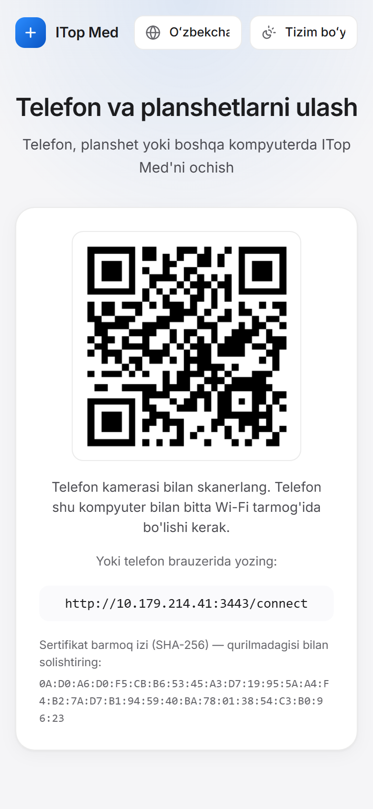
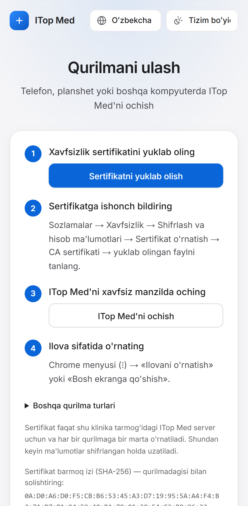
Sertifikat faqat shu klinika serveri uchun (ochiq qism). Maxfiy kalit (.data/certs/*.key) kompyuterdan chiqmaydi. Barmoq izini (SHA-256) ikki ekranda solishtirsangiz, soxta emasligiga ishonch hosil qilasiz. Email: SMTP bo'lmasa xatlar .dev-mailbox papkasiga tushadi; haqiqiy email uchun .env ga SMTP_URL qo'shing.
/admin/login ga email va parol bilan kiring.shifo-kardio), tarif, egasining emaili. Egaga taklif havolasi boradi.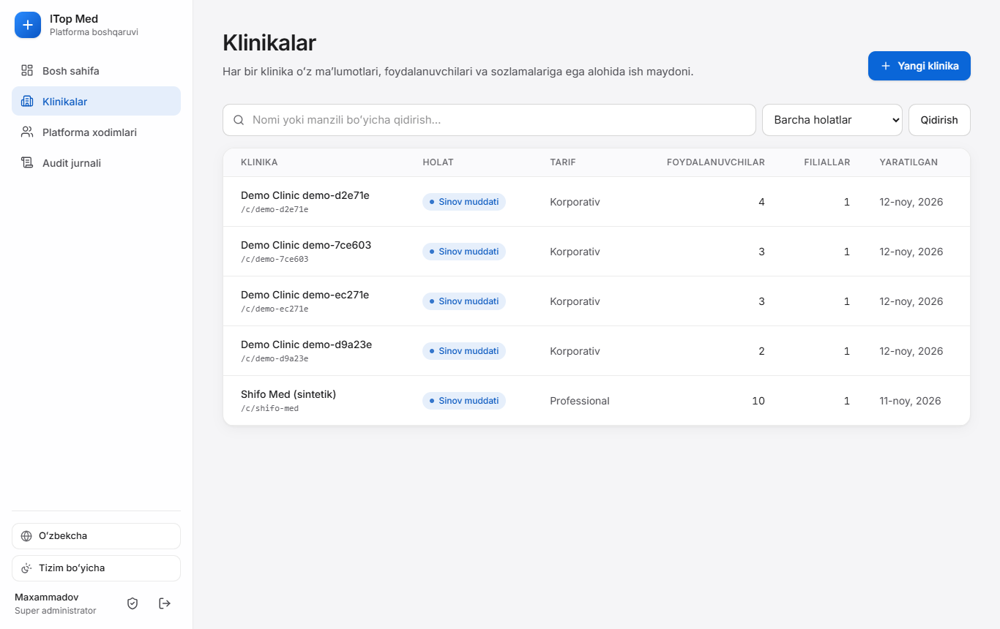
/login orqali kiring.Boshqa yo'nalishlar uchun ham tayyor xizmatlar bor: pediatriya, ginekologiya, oftalmologiya, LOR, nevrologiya, dermatologiya, urologiya, endokrinologiya, fizioterapiya, stomatologiya, diagnostika.
| Rol | Kundalik ish |
|---|---|
| Registrator | Bemorni topish yoki ro'yxatga olish → qabulga yozish yoki navbatsiz qo'yish → "Keldi" → kerak bo'lsa qabulni ko'chirish. Portal uchun bemorga faollashtirish kodi berish |
| Shifokor | "Bugungi bemorlarim" → qabulni boshlash → shablondan to'ldirish → yozuv → imzolash → tashxis → ko'rsatkichlar → tahlil → retsept → hujjat chop etish → qabulni yakunlash |
| Hamshira | Hamshira posti: qon bosimi, puls, harorat; tahlil namunasini olish |
| Laborant | Natijani kiritish → boshqa xodim tasdiqlaydi → shifokor bemorga chiqaradi |
| Kassir | Smenani ochish → qabul uchun hisob → xizmat qo'shish → chiqarish → to'lov → kvitansiya → kun oxirida smenani yopish (naqd hisobi mos kelishi kerak) |
| Ega / buxgalter | Nazorat markazi, hisobotlar, xarajatlar, xodimlar, sozlamalar, faoliyat jurnali |
| Bemor | Portalga telefon va parol bilan: qabullar (2 soat oldin bekor qilish), onlayn yozilish, natijalar, hisoblar, Telegram |
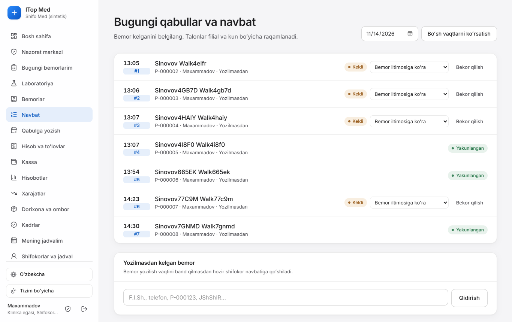
Bu yo'l har bir yangilanishdan keyin avtomatik sinov bilan brauzerda 15 bosqichda tekshiriladi (npm run e2e:walkthrough).
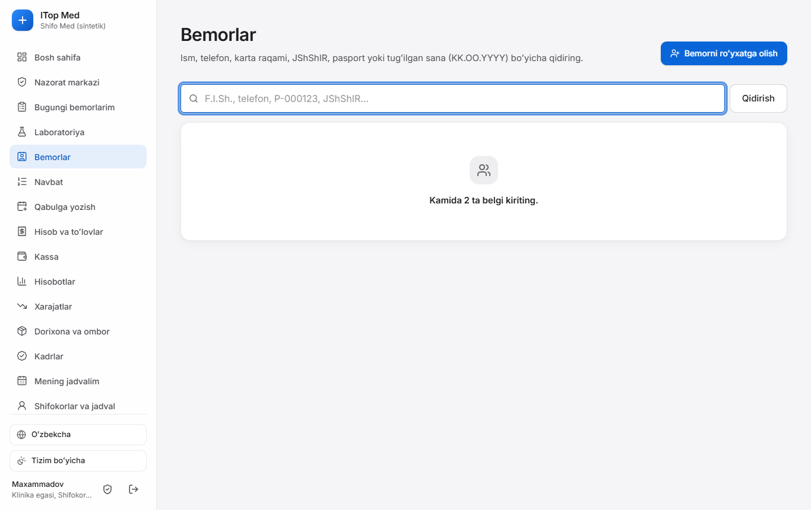
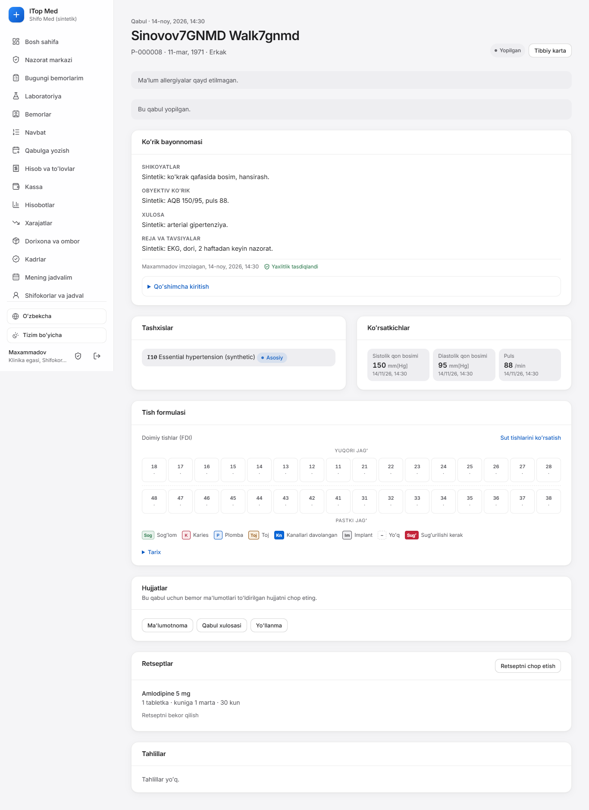




Chap menyuda qalqon belgisi. Bitta sahifada:
Qabullar, kutayotganlar, kelmaganlar; bugungi va oylik tushum (o'tgan oyning shu kunlariga nisbatan %); bemorlar qarzi.
Ochiq smenalar va har bir kassada hozir bo'lishi kerak bo'lgan naqd; smena yopilishidagi kamomad va ortiqchalar.
Kim, necha marta, qancha (30 kun); pul qaytarishlar; bekor qilingan hisoblar.
24 soatdan ortiq imzolanmagan yozuvlar, ochiq qabullar, hisobsiz qabullar; ikki bosqichli tekshiruvsiz rahbarlar; favqulodda kirishlar.
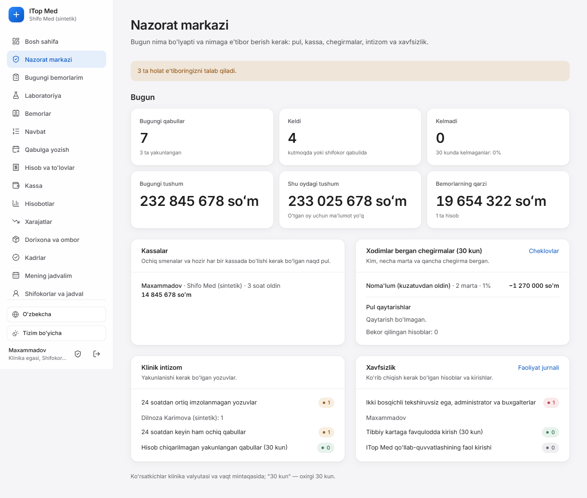
Egaga chegirma cheklovlari tegishli emas.
Bu bo'lim siz xohlagan hujjat va matnlarni dasturchisiz yaratish uchun. Chap menyu → Shablonlar.
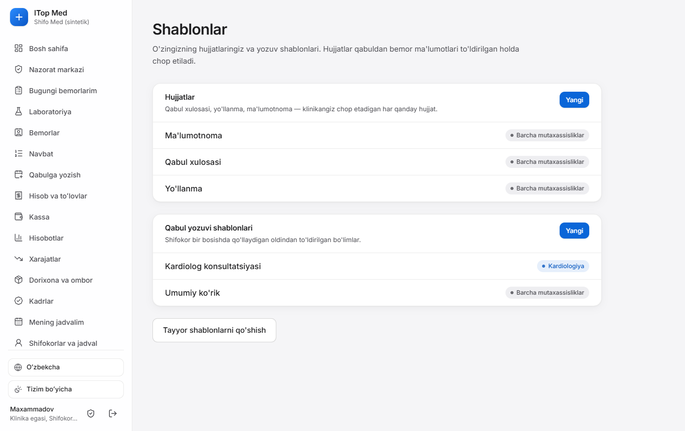
Qabul xulosasi, yo'llanma, ma'lumotnoma, shartnoma, tavsiyalar varag'i — klinikangizga kerak bo'lgan har qanday chop etiladigan hujjat. Matnga maydonlar qo'yasiz, chop etishda ular qabul ma'lumotlari bilan to'ladi.
Shikoyat, anamnez, ko'rik, xulosa, reja uchun tayyor matn (masalan "Kardiolog konsultatsiyasi"). Kerak bo'lsa faqat bitta mutaxassislik uchun ko'rinadi.
Shablon yaratish va o'zgartirish huquqi — klinika egasi va administratorda; shifokorlar ishlatadi.
Maydonni ikki qavs ichida yozing, masalan {{patient.fullName}}. Noma'lum maydon o'zgarmay ko'rinib qoladi — xatoni darrov ko'rasiz.
| Maydon | Nima qo'yiladi |
|---|---|
{{patient.fullName}} | Bemorning F.I.Sh. |
{{patient.birthDate}} · {{patient.sex}} | Tug'ilgan sana · jinsi |
{{patient.mrn}} | Tibbiy karta raqami |
{{visit.date}} · {{today}} | Qabul sanasi · bugungi sana |
{{doctor.fullName}} · {{doctor.specialty}} | Shifokor · mutaxassisligi |
{{clinic.name}} · {{clinic.address}} · {{clinic.phone}} | Klinika rekvizitlari |
{{note.complaints}} · {{note.history}} | Shikoyat · anamnez |
{{note.examination}} · {{note.assessment}} · {{note.plan}} | Ko'rik · xulosa · reja |
{{diagnoses}} | Tashxislar ro'yxati (MKB-10 kodi bilan) |
{{prescriptions}} | Faol retseptlar ro'yxati |
{{clinic.name}}, {{clinic.address}}, tel. {{clinic.phone}}
MA'LUMOTNOMA
Berildi: {{patient.fullName}}, {{patient.birthDate}} y.t.
{{visit.date}} kuni {{doctor.specialty}} qabulida bo'lgan.
Tashxis: {{diagnoses}}
Tavsiyalar: {{note.plan}}
Shifokor: {{doctor.fullName}} ________ Sana: {{today}} M.O'.

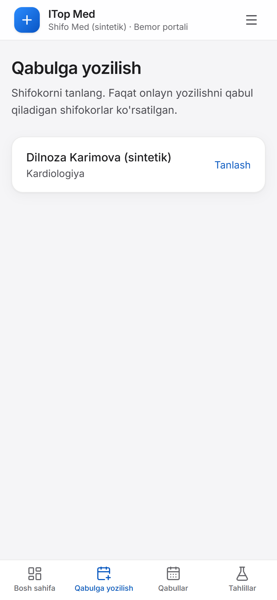

/newbot → nom → "bot" bilan tugaydigan username → token..env da TELEGRAM_TRANSPORT=api bo'lsin.Tasdiq, eslatma, ko'chirish, bekor qilish va natija tayyorligi haqida xabarlar boradi — tibbiy ma'lumotsiz. Server kompyuterda internet kerak. Haqiqiy bot token bilan hali sinalmagan — birinchi ulashda tekshirib ko'ring.
| Vazifa | Qayerda |
|---|---|
| Klinikani yaratish, to'xtatish, qayta yoqish, arxivlash | /admin/clinics → klinika |
| Tarif, bo'limlarni yoqish/o'chirish | Klinika sahifasi → Tarif / Modullar |
| Egaga taklifni qayta yuborish yoki bekor qilish | Klinika sahifasi → Takliflar |
| Klinikaga yordam berish uchun kirish | Qo'llab-quvvatlash so'rovi (klinika tasdiqlaydi, vaqt cheklangan, auditda) |
| O'z jamoangiz, MFA'ni qayta o'rnatish | /admin/staff (avval shaxsni tasdiqlang!) |
| Kim nima qildi | /admin/audit → "Zanjirni tekshirish" |
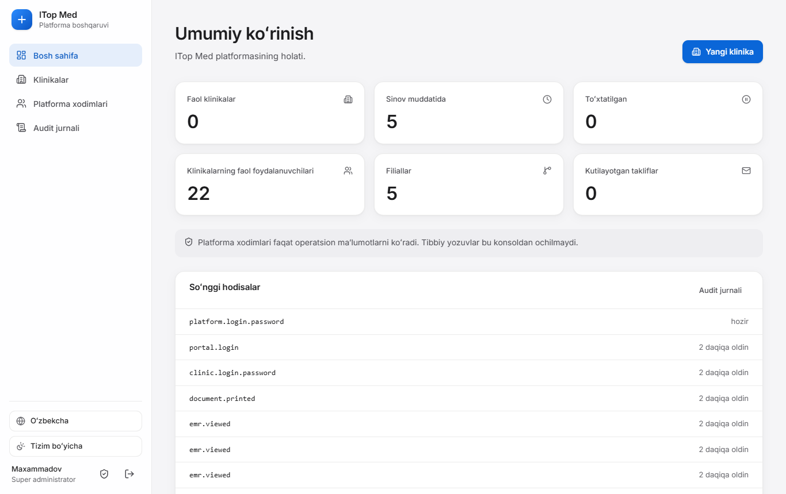
Klinika egasi o'z klinikasida: Xodimlar (rol, filial, to'xtatish, MFA'ni qayta o'rnatish), Rollar va huquqlar, Filiallar, Bo'limlar va xonalar, Shifokorlar va jadval, Xizmatlar va narxlar, Shablonlar, Sozlamalar, Integratsiyalar, Faoliyat jurnali, Qo'llab-quvvatlash kirishi.
npm run setup bilan yaratilgan yangi kalitlar va toza baza (sinov ma'lumotlari bo'lgan bazani ishlatmang)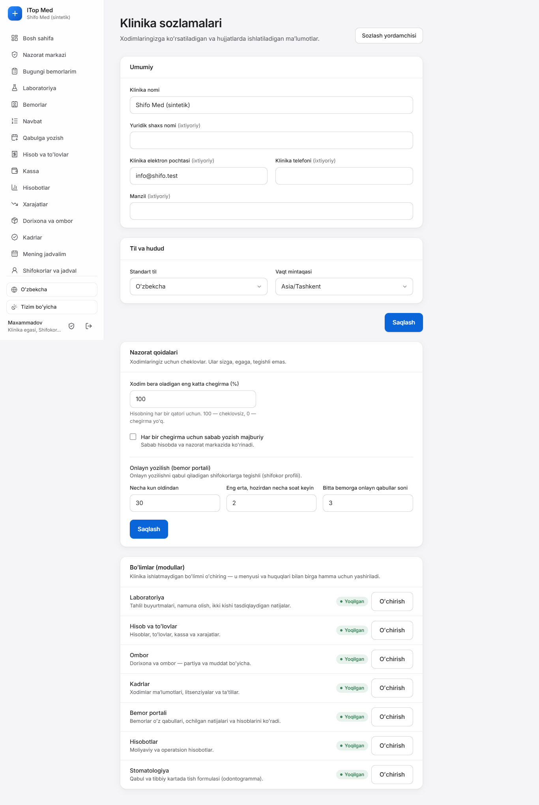
npm run backup
Shifrlangan nusxa backups/ ga tushadi. Boshqa diskka ham ko'chiring; kalit (BACKUP_ENCRYPTION_KEY) nusxa bilan birga saqlanmasin. Tiklanishini tekshirish:
npm run backup:verify -- backups/<fayl>.itmbk
Windows Task Scheduler orqali har kuni avtomatik ishga tushiring.
npm run backup git pull npm install npm run app
Ilova kod yangilanganini o'zi sezadi va qayta yig'adi, migratsiyalarni qo'llaydi (1–3 daqiqa).
| Belgi | Sabab va yechim |
|---|---|
| "Your connection is not private" | Sertifikat o'rnatilmagan: telefonda server IP manzilini yozing va ulanish sahifasi qadamlarini bajaring (6-bo'lim) |
| Telefonda sahifa ochilmaydi | npm run app:doctor sababini aytadi: boshqa Wi-Fi, server o'chiq, Firewall (npm run app:firewall) yoki mehmon Wi-Fi qurilmalarni ajratadi |
| "Too many attempts" / hisob bloklangan | 5–15 daqiqa kuting yoki "Parolni unutdingizmi" |
| Authenticator yo'qolgan | Tiklash kodi bilan kiring; yo'q bo'lsa administrator MFA'ni qayta o'rnatadi |
| Taklif xati kelmadi | SMTP yo'q — .dev-mailbox papkasini oching |
| Xizmatga hisob chiqmaydi | Xizmatga narx qo'yilmagan |
| Shifokorga qabul yozib bo'lmaydi | Jadval yo'q, ta'tilda yoki vaqt band |
| Chegirma rad etildi | Nazorat qoidalaridagi chegaradan oshgan yoki sabab yozilmagan |
| Bemor onlayn yozila olmaydi | Shifokorda "Onlayn yozilish" yoqilmagan, jadval yo'q yoki bemor limitga yetgan |
| Ilova ochilmaydi | npm run app:doctor; "ITop Med - to'xtatish" → qayta oching; jurnal: .data/logs/local.log |
| "OpenSSL was not found" | Git for Windows'ni o'rnating |
139 avtomatik test (shu jumladan klinikalar ajratilishi, huquqlar har bir sahifa va amal uchun), 66 ekran telefon/planshet/kompyuterda yorug' va qorong'i rejimda — hech narsa chegaradan chiqmaydi, 15 bosqichli to'liq klinik yo'l brauzerda. Yuqoridagi barcha bo'limlar, 4 til, WCAG 2.1 AA, shifrlangan zaxira, mahalliy tarmoqda HTTPS va ilova sifatida o'rnatish.
Tarjimalar (tibbiy muharrir), klinik jarayonlar (shifokor-maslahatchi), shaxsiy ma'lumotlar qonuni (huquqshunos). Klinikadan tashqarida, internet orqali ishlash uchun haqiqiy server, domen va TLS kerak — docs/DEPLOYMENT.md.
| Buyruq | Nima qiladi |
|---|---|
npm run app · npm run app:stop | Ilovani ochish · to'xtatish |
npm run app:doctor · app:firewall · app:autostart | Tekshiruv va QR · tarmoq ruxsati · avtomatik ishga tushish |
npm run app:shortcut | Ish stoli yorliqlarini yaratish |
npm run local | Server rejimi terminalda (tarmoq manzillarini ko'rsatadi) |
npm run setup | Yangi .env (kalitlar) yaratish |
npm run db:start · db:migrate · db:seed | Baza: ishga tushirish · migratsiya · tariflar |
npm run admin:create -- --email … --name "…" --role SUPER_ADMIN | Platforma administratori yaratish yoki parolini tiklash |
npm run worker | Bildirishnomalar xizmati (ilova o'zi ishga tushiradi) |
npm run backup · backup:verify -- <fayl> | Shifrlangan zaxira · tiklash sinovi |
npm run docs:pdf | Shu PDF hujjatlarni qayta yaratish |
npm test · lint · typecheck · i18n:check · build | Dasturchi tekshiruvlari (har o'zgarishdan keyin) |
npm run ui:audit -- --slug <klinika> | Barcha ekranlarni telefon/planshet/kompyuterda tekshirish |
npm run e2e:walkthrough -- --slug <klinika> | To'liq klinik yo'lni brauzerda sinash (faqat sinov bazasida) |
.env | Kalitlar va sozlamalar — hech kimga bermang, GitHub'ga yuklanmaydi, nusxasini xavfsiz saqlang |
.data/ | Baza, sertifikatlar, jurnallar |
backups/ | Shifrlangan zaxira nusxalar |
.dev-mailbox/ | SMTP bo'lmaganda xatlar va Telegram simulyatsiyasi |
docs/ | Arxitektura, xavfsizlik, joylashtirish, yo'l xaritasi, bu qo'llanma |
ITop Med · Loyiha manzili: github.com/ZTech-com/ITopMed. Bu hujjat docs/pdf-src/ dan npm run docs:pdf bilan yaratiladi.